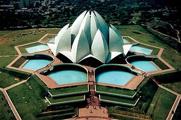
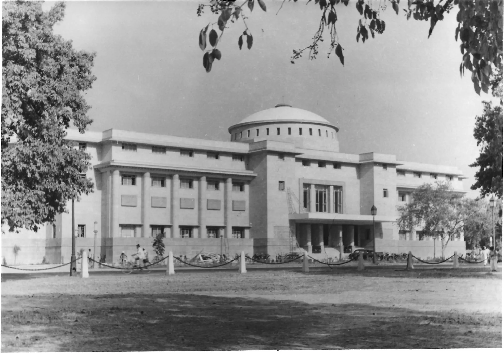

My Hometown
Delhi,[a] officially the National Capital Territory (NCT) of Delhi, is a city and a union territory of India containing New Delhi, the capital of India. Lying on both sides of the Yamuna river, but chiefly to the west, or beyond its right bank, Delhi shares borders with the state of Uttar Pradesh in the east and with the state of Haryana in the remaining directions. Delhi became a union territory on 1 November 1956 and the NCT in 1995.[21] The NCT covers an area of 1,484 square kilometres (573 sq mi).[5] According to the 2011 census, Delhi's city proper population was over 11 million,[6][22] while the NCT's population was about 16.8 million.
Delhi ranks fifth among the Indian states and union territories in human development index,[24] and has the second-highest GDP per capita in India (after Goa).[10] Although a union territory, the political administration of the NCT of Delhi today more closely resembles that of a state of India, with its own legislature, high court and an executive council of ministers headed by a chief minister. New Delhi is jointly administered by the federal government of India and the local government of Delhi, and serves as the capital of the nation as well as the NCT of Delhi. Delhi is also the centre of the National Capital Region, which is an "interstate regional planning" area created in 1985.[25][26] Delhi hosted the inaugural 1951 Asian Games, the 1982 Asian Games, the 1983 Non-Aligned Movement summit, the 2010 Men's Hockey World Cup, the 2010 Commonwealth Games, the 2012 BRICS summit, the 2023 G20 summit, and was one of the major host cities of the 2011 and 2023 Cricket World Cups.
About Delhi
Historical Monuments
- Red Fort
- Qutub Minar
- India Gate
Cultural Attractions
| Attraction | Description | Image |
|---|---|---|
| Lotus Temple | A temple shaped like a lotus flower, known for its tranquility. |  |
| National Museum | One of the largest museums in India, showcasing artifacts. |  |
| Humayun's Tomb | A magnificent mausoleum and a UNESCO World Heritage Site. |  |
Vibrant Markets
- Chandni Chowk
- Connaught Place
Delicious Cuisine
- Street Food: chaats, parathas, and other street foods.
- Mughlai Cuisine: Enjoy kebabs, biryani, and other delicacies.